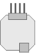

UP 220 device properties
The listed properties are displayed in the Hardware and network editor > Inspector window > Properties tab when the device with KNX PL-Link is selected in the Device view tab.
UP 220 |
 |
General and Catalog information
The General and Catalog Information group provides information about the device.
Property | Description | Default value |
|---|---|---|
Mode | Mode shows the network mode of the device. Read only. | KNX PL-Link |
Name | Name is a text field to enter the name of the device. The name is used to identify the device in the device view. | Depends on other settings. |
Comment | Comment is a free text field to enter any helpful information on the device. | - |
Power consumption | Power consumption shows the power the device consumes. Read only. Unit: [mA] The value is used to calculate the remaining power of the KNX rail. See also power consumption and supply on KNX rail of PXC3 or KNX rail of DXR2. | Depends on the device type. |
Short designation | Short designation shows a short description of the device. Read only. | Depends on the device type. |
Order number | Order number shows the device type. Read only. | Depends on the device type. |
Version | Version shows an internal version of the device. Read only. | - |
Description | Description shows a short description of the device. Read only. | Depends on the device type. |
Device information
The Device information group provides information about the device and settings valid for all channels. The availability of channels depends on the chosen inputs and outputs here.
Property | Description | Default value |
|---|---|---|
Device address (KNX) | Device address (KNX) shows the fixed standard address for devices with KNX PL-Link. Read only. | 255 |
Serial number used | Serial number used defines the method used for device identification.
|
|
Serial number | Serial number defines the serial number used for device identification. Serial number is only enabled and relevant if Serial number used is enabled. | 000000000000 |
Function channels 1/2 | Functions channels 1/2 defines if the channels 1 and 2 are paired and if the channels are used as inputs or outputs.
| 2 Inputs |
Function channels 3/4 | Functions channels 3/4 defines if the channels 3 and 4 are paired and if the channels are used as inputs or outputs.
| 2 Inputs |
HWChannelSwapPair1 1) | HWCChannelSwapPair1 defines how the dimming or moving direction is assigned to the buttons A and B.
|
|
HWChannelSwapPair2 1) | HWCChannelSwapPair2 defines how the dimming or moving direction is assigned to the buttons C and D.
|
|
 : The serial number entered in the text field Serial number is used for device identification.
: The serial number entered in the text field Serial number is used for device identification. : Device identification has to be done in Web interface. The device has to be in programming mode for Web interface to perform the device identification.
: Device identification has to be done in Web interface. The device has to be in programming mode for Web interface to perform the device identification. 2 Inputs: Channels 1 and 2 are not paired and are configured as inputs. A single pushbutton can be connected to each channel.
2 Inputs: Channels 1 and 2 are not paired and are configured as inputs. A single pushbutton can be connected to each channel.1) If the subsystem specific extension Configure: UP 220 (PrphDev - subsystem-specific extension) of the BACnet object Peripheral device (PrphDev) is enabled, you have to configure this property in the BACnet objects editor or in Web interface.
Alarming
Property | Description | Default value |
|---|---|---|
Alarming |
|
|
Functions
The functions table in the Channel Overview provides an overview of the channels of the device. Depending on the device the values in the table are read only or can be edited. The available types depend on the device and the application function.
Property | Description |
|---|---|
Name | Name of the channel. Read only. |
Type | Name of the function. |
Zone | Part of the geographical address of the device. Range: 1...126 |
Room | Part of the geographical address of the device. Range: 1...63 |
Subzone | Part of the geographical address of the device. Range: 1...15 Note |
Activate | Activate defines if the channel is activated.
|
The functions are described briefly in the table below.
Type | Description | Number of channels used |
|---|---|---|
GPDI | General purpose digital input. | 1 |
LDSB | Light dimming sensor basic | 2 |
LSSB | Light switching sensor basic | 1 |
SCS | Scene sensor | 1 |
System | Device information that is mapped to the BACnet object peripheral device (PrphDev). Read only. | 1 |
Some of the functions can be configured. The properties of those functions are described below in order of their appearance in the drop-down list.
General purpose digital input (GPDI)
Property | Description | Default value |
|---|---|---|
Activate heartbeat | Activate heartbeat defines if the process value is sent at the intervals defined in the property Heartbeat.
|
|
Heartbeat | Heartbeat defines the time interval to report the process value. Range: | 15 |
 1...255 [min]
1...255 [min]Light switching sensor basic (LSSB)
Property | Description | Default value |
|---|---|---|
Rising edge | Rising edge defines the switching behavior of the pushbutton if a rising edge is detected.
|
|
Falling edge | Falling edge defines the switching behavior of the pushbutton if a falling edge is detected.
|
|
Light dimming sensor basic (LDSB)
Property | Description | Default value |
|---|---|---|
Push button function | Push button function defines if 1 or 2 pushbuttons are used for switching or dimming and defines the behavior of the pushbuttons.
|
|
Polarity inverse | Polarity inverse defines how dimming up and dimming down are assigned to the buttons.
|
|
Pulse length | Pulse length defines how long a pushbutton has to be pressed to be detected as a long key press. Range: | 5 |
Scene Sensor (SCS)
Property | Description | Default value |
|---|---|---|
Memorize | Memorize defines if scenes can be saved using teach-in.
|
|
Scene function | Defines if the numbered scene will be recalled or saved.
|
|
TeachInDisable | TeachInDisable defines if the use can save the scene specified in the column Number.
|
|
Active | Active defines if the user can select the scene specified in the column Number.
|
|
Number | Number assigns a predefined scene to the key. Range: 0…15 | 0 |
Polarity inverse | Polarity inverse defines if the digital input is connected to a normally open or a normally closed physical input.
|
|
Pulse length | Pulse length defines how long a pushbutton has to be pressed to be detected as a long key press. Property is used to differentiate between a recall (short key press) or a teach-in (long key press) command. Range: | 50 |